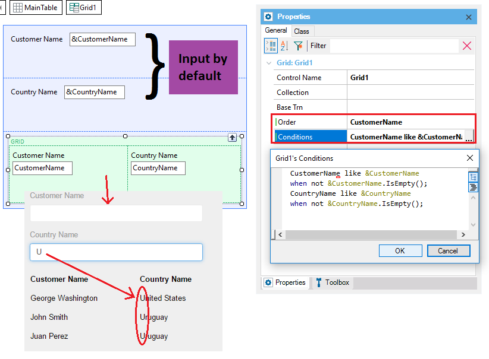
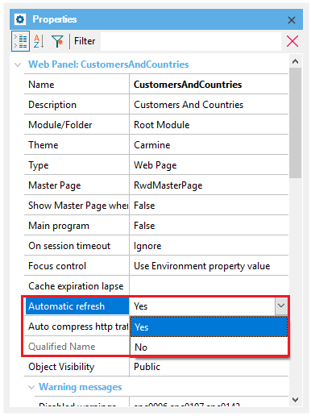
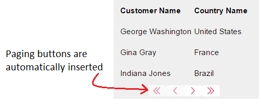
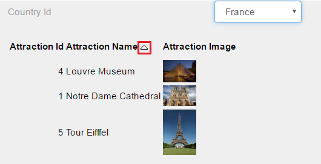
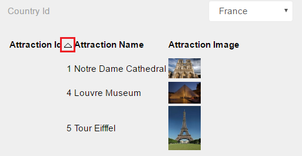
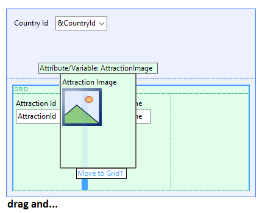
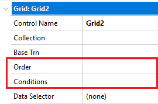

When a grid is included in a form, it means that an undefined quantity of data will be displayed. There's a grid and there are attributes, so there will necessarily be a base table, that is, the base table with the data that will be browsed in order to find the required information. If instead of displaying this information on screen, we wanted it listed, we'd create a procedure with a "customer" print block with the CustomerName and CountryName attributes, and in the source we'd program as follows:
for each customer
print customer
endfor
This is similar, except that the For each is implicit, there's no need to specify it. Every grid line loaded is like the print executed in each iteration of the listing's For each command. When GeneXus can automatically determine a table to be browsed in order to load the grid lines, it does so, and in that case you won't need to provide that information. That's why we say there is an "implicit" For each. Later on we'll look at cases where this does not happen this way (grids without a base table). Look at the example and note that if in the base table there are four records, they'll be loaded one by one. If we now want the user to be able to filter those customers he/she wants to view, we'll have to involve the variables that we've defined in the fixed part of the form, as we'can see in the image below.  There's a property called "Conditions" in the window containing the Grid control properties. By clicking on the combo, an editor will open where you can specify the Boolean conditions the records must comply with in order to be loaded as grid lines. This is why the &CustomerName and &CountryName attributes have been added to the web panel form, so that the user can enter there the values operating as filters on the data to be displayed. In our case, we've established filters with the like operator. The variables in the flat part of web panels forms are input variables by default. Later on we'll see that, in principle, if they're in grids they'll be output variables by default. Note that the conditions (separated by “;”) are equivalent to those appearing in the where clauses in a for each (or a Data Provider repetitive group). Likewise, due to optimization reasons, we can determine —as with a For each— a sorting criterion for the table to be browsed. Note: Also, just like in a procedure, not only conditions local to the grid (For each) can be established but also general ones, through the Conditions selector. This will make sense when we have more than one grid (For each), so that we don't have to repeat the same condition every time. A Grid (with or without a base table) can be loaded in an automatic way once the related filters are executed, depending on the value of the Automatic Refresh property.  Yes: Grids load automatically. This is the default value. Automatic paginationGeneXus performs an automatic pagination if the Rows property of the grid has a value other than zero. The buttons inserted depend on the number of records to be shown and the number of lines of the grid. 
Automatic column sortingDuring the execution of the application, the columns can be sorted without having to program any additional code, just by clicking on the column title: This functionality is valid for grids in transactions and in web panels.The loaded grid page, is ordered, this is why it doesn't compete with the Order programmed at a grid level.   Drag & Drop of columnsDuring the design of the transaction or of the web panel, columns can be exchanged just by performing a Drag & Drop operation. When you select the column to be moved, a blue arrow appears indicating the possible places where such column can be inserted. The mouse is positioned on one of those places (Drag), and there you "drop" the column (Drop).  By default, every attribute and variable inside a grid is displayed as text at execution time, which means that they are read-only and can't be changed. However, data can be accepted in grid variables depending on the events programmed in the object. Consider the following situations:
All variables inside the grid become input variables. In this case we can indicate which variables can't be modified by using the NoAccept() rule or changing the Read Only property of the variable inside the grid. Associating Events to a LineAn event can be associated with any variable or attribute belonging to the grid. It can be done in two different ways:
Event nombreControl.click source code EndEvent With the second option we don't have to define a user event, but we will program the click event. Selecting LinesTo do so, access the grid properties and set the AllowSelection property to True. In doing so, three more properties are enabled, as follows:
In order to select multiple lines of a grid, one way to do it is to add a column with a check box, and program the following in any user event: For each line in grid If &check = ‘Y’ ... Endif endfor Load Event for GridsThe scope of the Load Command extends to any event of the web panel, not only Load Events. Hence, you can code the loading of a grid inside any user event of the web panel. Event 'UserEvent' Grid.load() EndEvent Orders and Conditions.When working with grids in web panels, it is possible to set orders and conditions in order to establish them to grid elements, That is not possible on generated Transaction grids (such as level generated grids), as it is assumed to be showing every element from a record on update or delete mode. To set them, in Grid properties you can find them under ControlName 
|
| Backlinks |
| Category:Grid control |